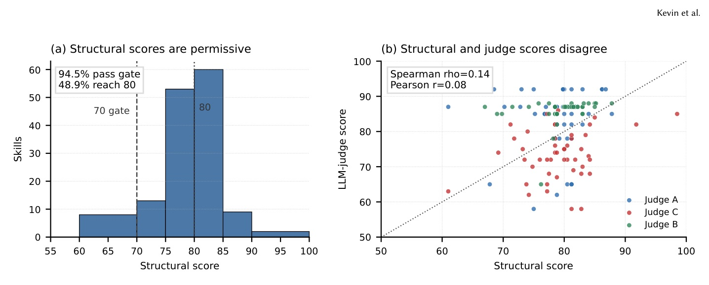
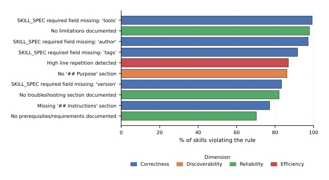
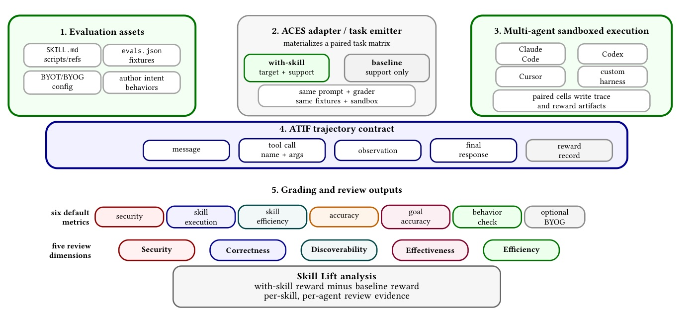
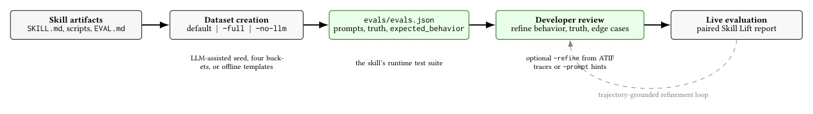
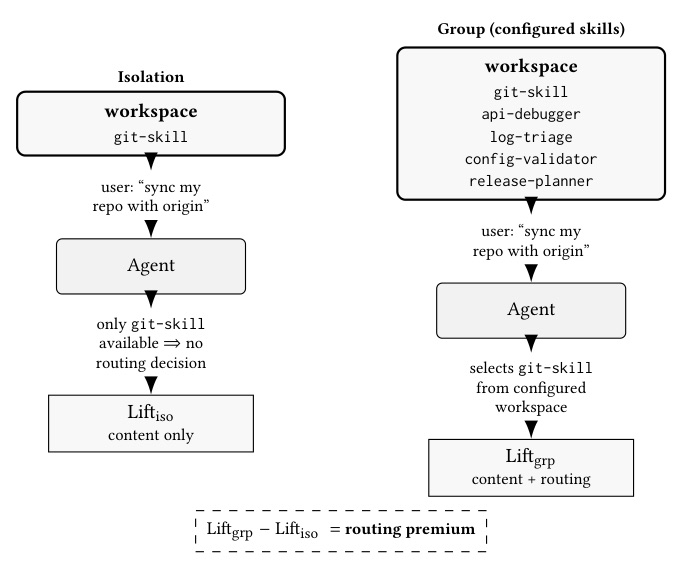
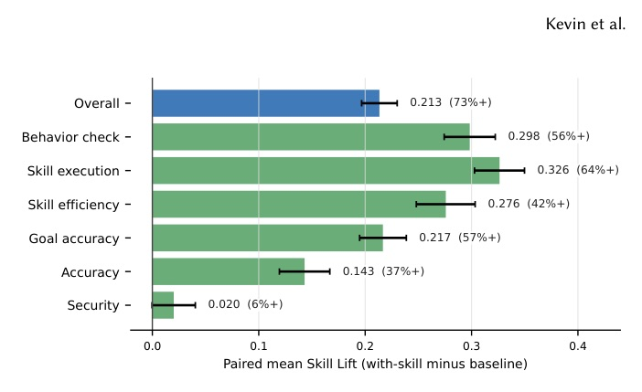
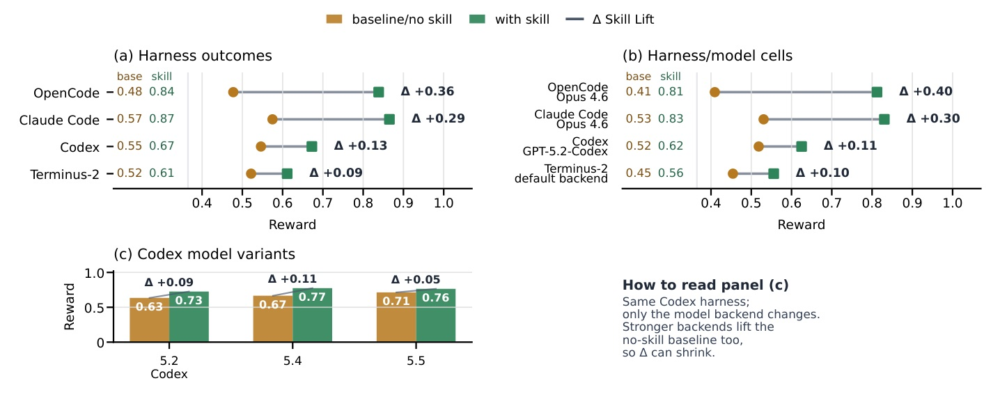
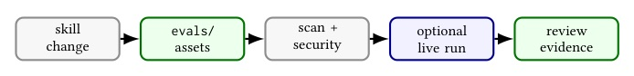

論文：Evaluating Skills, Not Just Agents: Agentic Continuous Evaluation of Skills（arXiv 2608.20614v1，cs.AI）· 開源實作 github.com/NVIDIA/SkillEvaluator
現在的 skill 評測只掃文件、不跑 skill。ACES 對每個 task 同時跑「有這個 skill」與「沒這個 skill（其他 skill 照放）」兩組 live agent，相減得 Skill Lift。947 組配對中平均 lift +0.2134（95% CI [0.1967, 0.2301]），而靜態評分和 live lift 的相關係數只有 ρ ≈ −0.02：文件寫得漂亮，不代表 agent 用得好。
組成
SKILL.md：描述 + 指令關鍵設計：progressive disclosure
現有四類（全是 scan-only）
rm -rf掃不出的 5 種 runtime 失敗
-Wall -Werror 只代表沒有 warning，不代表程式做對了事。Tier 1 · Structural（Table 1）
| 維度 | 權重 |
|---|---|
| Correctness：frontmatter、Instructions 段、script 存在 | 0.35 |
| Discoverability：description 長度 50–150、trigger 詞彙 | 0.25 |
| Reliability：錯誤處理、Prerequisites / Limitations 段 | 0.25 |
| Efficiency：token 預算、重複行、巢狀引用深度 | 0.15 |
每維度從 100 扣分，加權總分 ≥ 70 過 gate；毫秒級、不用 API key
Tier 2 · LLM-as-Judge（Table 2）


toolsauthortags| Approach | Artifact | Value (lift) | Multi-harness | CI | HITL |
|---|---|---|---|---|---|
| SkillsBench | − | ✓ | ✓ | − | − |
| SkillTester | ✓ | − | − | − | − |
| Skills In-the-Wild | − | ✓ | − | − | − |
| Anthropic skill-creator | ✓ | − | − | − | − |
| Terminal-Bench | − | − | ✓ | − | − |
| ACES（本文） | ✓ | ✓ | ✓ | ✓ | ✓ |
Artifact＝直接替 skill 本身打分；Value＝用 lift 量邊際價值；Multi＝跨多個 agent harness；CI＝原生接 CI；HITL＝人參與 dataset 修正
evals.json），同一份資料拿去評 Claude Code、Codex 等不同 harnessEVAL.md 優先於 LLM 產生的內容
Schema
id、questionexpected_skill（negative case 為 null）expected_script（可選）、ground_truthexpected_behavior[]：有順序的自然語言句子LLM judge 對每句回答 YES/NO，取通過比例；缺 security 句會自動補上
四桶 bootstrap（create-dataset --full）
需要產品狀態或特殊判分時：BYOT（自帶 task）/ BYOG（自帶 grader）

create-dataset --refine --from-results <path> 重讀已存的 ATIF trajectoryground_truth：agent 最終答案符合作者意圖時才替換expected_behavior；EVAL.md 的指示永不覆寫| Metric | 類型 | 在量什麼 | → 維度 |
|---|---|---|---|
| security | 確定性 pattern | 破壞性操作、外洩金鑰、越界存取 | Security |
| skill_execution | 確定性 4 子項 | activation · script_execution · workflow_order（先讀再做）· error_recovery | Discoverability |
| skill_efficiency | 確定性 2 子項 | routing（只讀允許的 skill）· tool_efficiency（--help 亂試、ls 錯路徑、任務中裝套件算浪費） | Efficiency |
| accuracy | LLM judge | 5 個二元問題，yes 數 / 5 | Correctness |
| goal_accuracy | RAGAS / LLM | 整段對話含 tool call 有沒有達成目標 | Effectiveness |
| behavior_check | LLM judge | expected_behavior 滿足比例 | Effectiveness |
右欄是給作者與 reviewer 看的 5 個 stakeholder 維度（Table 4）；BYOG 指標另外列，不改動預設定義
ATIF：跨 harness 的 trace 契約
Adapter：每次即時產生拋棄式任務
instruction.md、task.toml、Dockerfile、environment/skills/、Compose（mock MCP）、verifier
| 項目 | 數量 |
|---|---|
| 掃描的 skill | 145 |
| live 評測 skill 變體 | 89 |
| 排除的 scaling-study 變體 | 25 |
| production skills / 有配對分數 | 64 / 58 |
| skill–agent cells / 有配對分數 | 201 / 177 |
| scored paired task cases | 947 |
| Trace 證據 | 數量 |
|---|---|
| Saved ATIF trajectories | 2,022 |
| Recorded agent steps | 14,335 |
| Tool calls | 11,642 |
| Behavior observations | 9,091 |
類別分佈：System Access 49、Deployment 41、Platform 29、Data Infra 21、Troubleshooting 3、Dev-Tooling 1、Other 1（Table 5）。原始 trace 含內部主機名，不公開。

| Metric | Lift | 正比例 |
|---|---|---|
| Skill execution | 0.326 | 64% |
| Behavior check | 0.298 | 56% |
| Skill efficiency | 0.276 | 42% |
| Goal accuracy | 0.217 | 57% |
| Accuracy | 0.143 | 37% |
| Security | 0.020 | 6% |
skill_efficiency 平均第三大，但只有 41.7% 為正 → 有些 run 用效率換正確性或流程完整

靜態分數和 runtime 價值在統計上不相關：62 個 production skill 上，結構分對 live lift 的 Spearman ρ = −0.0181，LLM-judge 分為 −0.0266，95% CI 都跨過 0。文件分數無法代替實驗。
負 lift 是 review 目標
Routing stress（25 變體）
| 可見 skill 數 | 平均 lift | wall time |
|---|---|---|
| 1 | 0.133–0.149 | 258 s |
| 20 | 0.133–0.149 | 451 s |
| 50 | pass rate 0.55（1 個時 0.725） | 1,290 s |
5 個 target × {1, 5, 10, 20, 50} × 2 harness；1–20 個時 lift 穩定，50 個時當作壓力測試，不列入 headline
| Case | Trace 觀察 | 意義 |
|---|---|---|
| 正向 routing | 公開 workflow skill 經預期路徑啟動，1/1 productive tool call，5/5 behavior 通過 | 高 lift 的具體機制 |
| 部分成功 | 診斷出缺 OAuth token，但沒給授權 URL、也沒重跑驗證 | 最終答案看不出少了必要步驟 |
| 作者回饋 | artifact workflow 卡在 pending，trace 產出 polling、retry、補救步驟的建議 | live eval 能變成修改建議，不只 pass/fail |
| Security 分離 | 回填掃出疑似金鑰字串、破壞性指令、越界路徑 | security 獨立成 metric，不被 behavior 分數掩蓋 |

evals/ 內容：evals.json、EVAL.md、files/ fixtures、config.yml、harbor/（BYOT/BYOG）、自訂 Dockerfile 與 mock MCPAll four classes share a structural property: they scan the skill document. None runs it.
四類工具有一個共同點：都在掃描 skill 文件，沒有一個真的去執行它。§1, p.1
The naive baseline thus inflates lift by attributing both to the skill.
因此，空 workspace 的 baseline 會把內容與可被發現性兩者都算給這個 skill，灌高 lift。§4.7, p.8
These correlations are statistically indistinguishable from zero.
這些相關係數在統計上與零無法區分。§6.7, p.11
Lift may therefore shrink even when absolute task performance improves, because the baseline agent no longer needs as much help from the skill.
因此即使絕對表現提升，lift 仍可能縮小，因為 baseline agent 已經不那麼需要這個 skill 幫忙。§7, p.12
| 項目 | 數值 | 出處 |
|---|---|---|
| 結構分範圍 / 平均 / 中位數 / σ | 61–98 / 79.2 / 79.8 / 4.9 | §2.4 p.3 |
| 過 70 gate / 到 80 分 | 94.5% / 48.9% | §2.4 p.3 |
| LLM-judge 過 70 | 86.2% | §2.4 p.3 |
| 結構 vs judge 相關 | Spearman 0.14 / Pearson 0.08 | §2.4 p.3 |
| 靜態分 vs live lift（62 skills） | Tier1 −0.0181 / Tier2 −0.0266 | §6.7 p.11 |
| Composite lift（947 case） | 0.2134，CI [0.1967, 0.2301] | §6.4 p.10 |
| Outcome-only lift | 0.1799 | §6.4 p.10 |
| 重複 cell 的 within-cell SD | median 0.0319 / mean 0.0699（88 cells） | §6.3 p.10 |
| Raw-row 重建（898 / 947） | composite 0.2153；保守插補 0.1840 | App. B p.15 |
| Isolation decoy 範例 | api-debugger, log-triage, config-validator, release-planner | §4.8 p.8 |
來源：Evaluating Skills, Not Just Agents: Agentic Continuous Evaluation of Skills · arXiv 2608.20614v1 · NVIDIA · 開源實作 NVIDIA/SkillEvaluator